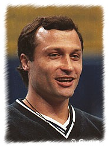

Artur Akopyan (USSR)
1983 World V Champion
|

Medal Total
World Championships: 2 Gold, 3 Silver,
1 Bronze
|
Akopyan was born on September 28,
1961 in Yerevan. He was coached by Genrikh Vaniziyan at the Trudoviye
Reservi Club. At the 1981
World Championships, he received three scores of 10 (two on HB and one on
V). Akopyan now lives in the US. He opened All Olympia Gymnastics Center, located in Calabasas, CA, with Bulgarian Olympian Galina Marinova and they coached multiple world and Olympic competitors including Mattie Larson and McKayla Maroney. He was a member of USAG's national coaching staff from 1989 to 2004.
Competition Results
- 1976
Jr. USSR Cup (Candidate for Master of Sport): 1st AA
1977
All-Union Youth Sports Games: 1st V
Jr. Friendship Tournament (Druzhba): 1st Team, 6th AA
- Jr. USSR Championships: 1st AA
-
- 1978
- Jr. Friendship Tournament (Druzhba): 1st
Team, 4th AA, 2nd HB
Jr. USSR Championships: 2nd AA
-
- 1979
- Chunichi Cup: 3rd AA
Jr. USSR Cup: 1st AA, 1st FX, 1st PH, 2nd V, 2nd PB, 3rd R, 3rd HB
- Jr. USSR-GDR Dual Meet: 1st Team, 1st AA
- Jr. USSR-ROM Dual Meet: 1st Team, 1st AA
- Tokyo Cup: 1st V, 1st HB
USSR Championships: 5th Team, 6th AA, 4th FX
- USSR Spartakiade: 13th AA, 5th FX
-
- 1980
- Moscow News: 3rd AA
- USSR Cup: 6th AA
-
- 1981
- Milan Grand Prix: 4th AA
- University Games: 3rd AA, 2nd RG, 5th V, 6th HB, 7th
FX
- USSR Championships: 5th AA, 1st V, 2nd
HB, 5th R
- USSR Cup: 11th AA, 2nd HB, 6th R
- World Championships (Moscow): 1st
Team, 2nd HB, 2nd V, 8th AA
(prelims)
-
- 1983
- Dynamo Spartakiade: 3rd AA
- Riga International: 1st AA, 1st FX, 1st V, 3rd PB
- USA-USSR Dual Meet: 1st Team, 6th AA
- USSR Championships: 5th AA, 1st V, 4th
PH, 6th FX
- USSR Cup: 2nd AA, 1st V, 3rd HB
USSR Spartakiade: 3rd AA, 1st V
- World Championships (Budapest): 2nd Team, 3rd
AA, 1st V
-
- 1985
- USSR Championships: 6th AA, 8th PH
USSR Cup: 6th AA
This page was last updated on December 21,
2002 and was last updated on August 02, 2004.
© Gymn Forum.